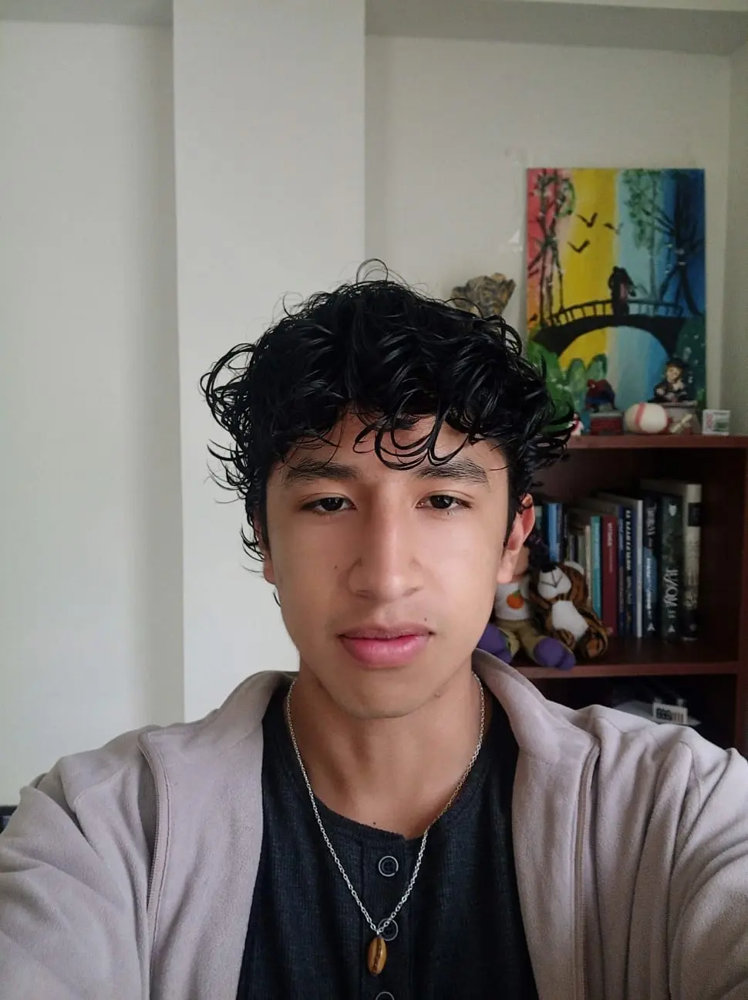

Santiago Padilla | WDD 130
Hello! My name is Santiago Padilla, and I am from Sucre, Bolivia. I am currently pursuing a double challenge: studying Telecommunications Engineering at Universidad San Francisco Xavier de Chuquisaca and Software Development at BYU-Idaho. I have a strong background in academics, having worked as an Assistant Professor for Calculus II and as a private tutor in Mathematics and Physics.
I am passionate about technology and how it connects the world. My goal is to combine my knowledge in telecommunications with web development to create innovative digital solutions. In my free time, I love diving into books and watching sitcoms How I met your mother and Friends are some of my favorites! About my books La Casa de los Espiritus and The Monk are some of my favorites as well! I am so excited to be part of this course and to start my journey as a web developer.